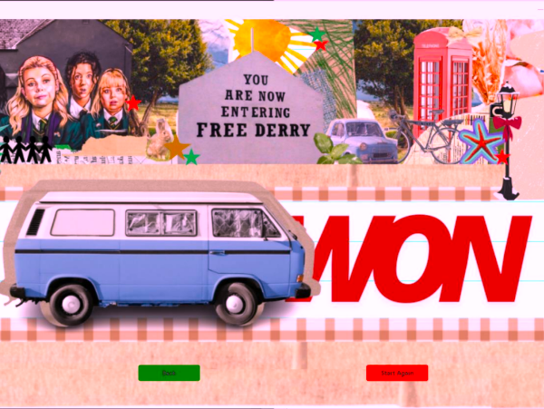
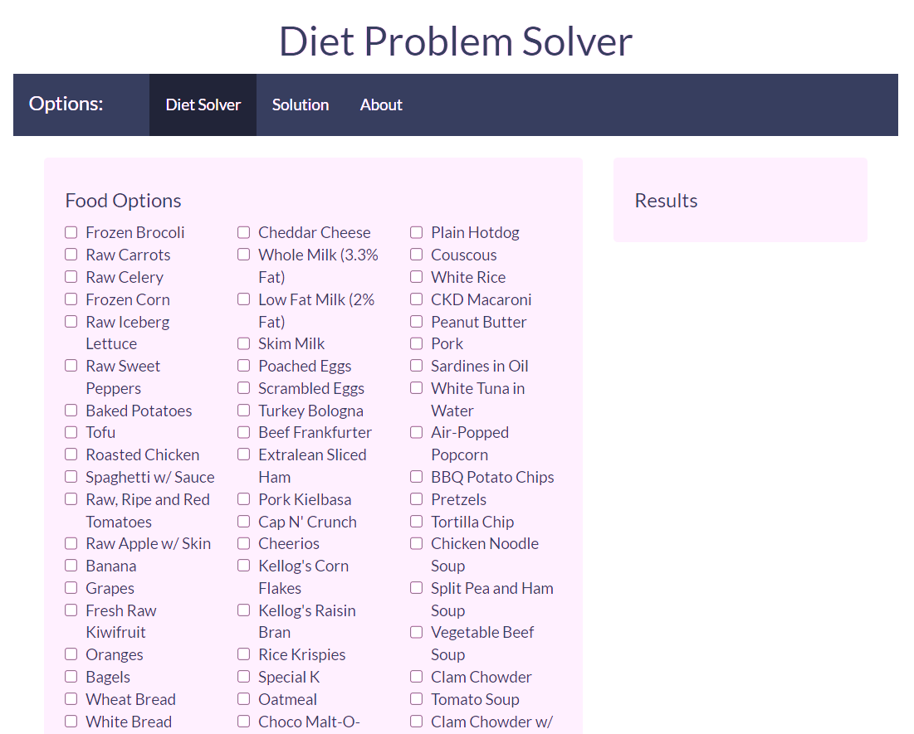
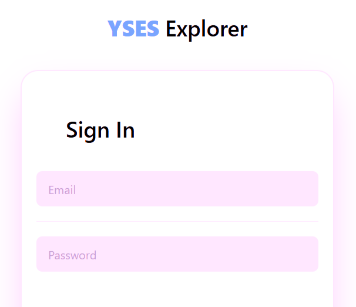

Portfolio
FEATURE PROJECT:
Passenger Rush is a local two-player game played on a single computer, where both players take on the role of jeepney drivers with default routes on Kaliwa and Kanan. The objective is to transport as many passengers as possible to the Junction Unloading Area while avoiding natural and user-made disasters. The game features simultaneous player movements on a strategic map, with interactive elements such as randomly spawning power-ups that can alter the gameplay and provide tactical advantages. Players compete to achieve a specific victory condition, which involves controlling key areas of the map to gain an edge over their opponent.
Previous Projects
Derry Cross
Derry Cross is a simulation game where two students cross the road and two vehicles are running infinitely at a speed. The vehicle has two lives, and whoever hits a student twice first loses. This project is from my CMSC 22 laboratory exercise.
Diet Problem Solver
Diet Problem Solver is an application that helps users to have a diet that is affordable and still meets required nutrinional values for meals. Users have a variety of food choices to select and among the selected choices, the application computes the prices and nutritional values of the food using Simplex Method. This application was made using the R programming language and R-gui.
YSES Explorer
YSES explorer allows an organization to create a dedicated application for the sharing of events outside the university. The main function of this is that users are able to create teams to join such events. These events are not limited to competitive fields but also educational ones where users can share insights and reviews.
Personal Information
Hello! I am John Emy L. Bautista, 20 years old
and currently taking B.S. Computer Science in UP Los Banos.
I am hoping to learn a lot in the university and apply it to help our society.
Programming Language: Python, Rscript, C, Java
Interests: Web Development, Data Science, Game Development